<!DOCTYPE lake>
<p data-lake-id="u6d5a894f" id="u6d5a894f"><span data-lake-id="u52d1d281" id="u52d1d281">文档地址：</span><a data-lake-id="u7dfdc270" href="https://doc.zh-jieli.com/vue/#/docs/ac791N" id="u7dfdc270" rel="noopener noreferrer" target="_blank"><span data-lake-id="ud60c668b" id="ud60c668b">https://doc.zh-jieli.com/vue/#/docs/ac791N</span></a></p><h2 data-lake-id="NHCXU" data-lake-index-type="2" id="NHCXU"><span data-lake-id="ubfc0a4e5" id="ubfc0a4e5">项目介绍</span></h2><p data-lake-id="uec9195ac" id="uec9195ac">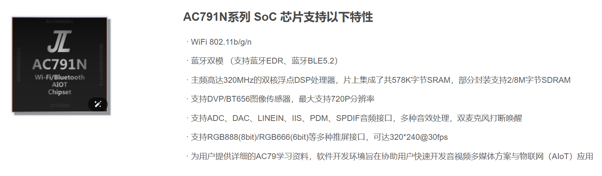</p><h2 data-lake-id="IeWwH" data-lake-index-type="2" id="IeWwH"><span data-lake-id="u8eb00dce" id="u8eb00dce">应用场景</span></h2><p data-lake-id="uae7cfa52" id="uae7cfa52">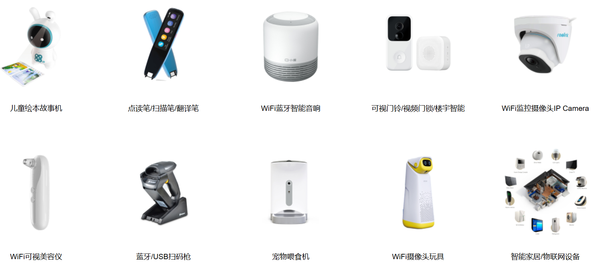</p><h2 data-lake-id="UMtOL" data-lake-index-type="2" id="UMtOL"><span data-lake-id="ud38a9f08" id="ud38a9f08">软件环境</span></h2><p data-lake-id="u0c0432eb" id="u0c0432eb"><span data-lake-id="u158b4b97" id="u158b4b97">参考链接：</span><a data-lake-id="u44d0e34a" href="https://doc.zh-jieli.com/AC79/zh-cn/master/getting_started/environmental_install/index.html" id="u44d0e34a" rel="noopener noreferrer" target="_blank"><span data-lake-id="u3ad14f1a" id="u3ad14f1a">https://doc.zh-jieli.com/AC79/zh-cn/master/getting_started/environmental_install/index.html</span></a></p><p data-lake-id="u58cedb52" id="u58cedb52"><span data-lake-id="u1d76c873" id="u1d76c873">杰理的软件环境安装主要包含如下3步</span></p><ol list="uc310fb99"><li data-lake-id="u416befd4" fid="ub306030b" id="u416befd4"><span class="lake-fontsize-12" data-lake-id="u4b33da86" id="u4b33da86" style="color: rgb(34, 34, 34); background-color: rgb(252, 252, 252)">下载并安装 CodeBlocks，下载链接： </span><a data-lake-id="u45794ad8" href="http://pkgman.jieliapp.com/s/codeblocks" id="u45794ad8" rel="noopener noreferrer" target="_blank"><span class="lake-fontsize-12" data-lake-id="u3c746740" id="u3c746740" style="color: rgb(48, 145, 209); background-color: rgb(252, 252, 252)">http://pkgman.jieliapp.com/s/codeblocks</span></a></li><li data-lake-id="u3cb73073" fid="ub306030b" id="u3cb73073"><span class="lake-fontsize-12" data-lake-id="ua66bec82" id="ua66bec82" style="color: rgb(34, 34, 34); background-color: rgb(252, 252, 252)">下载并安装工具链，下载链接：</span><a data-lake-id="ua7dec545" href="http://pkgman.jieliapp.com/s/win-toolchain" id="ua7dec545" rel="noopener noreferrer" target="_blank"><span class="lake-fontsize-12" data-lake-id="ue010e5c2" id="ue010e5c2" style="color: rgb(41, 128, 185); background-color: rgb(252, 252, 252)">http://pkgman.jieliapp.com/s/win-toolchain</span></a></li><li data-lake-id="uac8c1b83" fid="ub306030b" id="uac8c1b83"><span class="lake-fontsize-12" data-lake-id="udc82ffc0" id="udc82ffc0" style="color: rgb(34, 34, 34); background-color: rgb(252, 252, 252)">下载并安装软件包管理器，下载链接：</span><a data-lake-id="u9a71504f" href="http://pkgman.jieliapp.com/s/pkgmanoffline" id="u9a71504f" rel="noopener noreferrer" target="_blank"><span class="lake-fontsize-12" data-lake-id="u1ab740eb" id="u1ab740eb" style="color: rgb(41, 128, 185); background-color: rgb(252, 252, 252)">http://pkgman.jieliapp.com/s/pkgmanoffline</span></a></li></ol><h3 data-lake-id="WiFLr" data-lake-index-type="2" id="WiFLr"><span data-lake-id="ud9746493" id="ud9746493">安装</span><span class="lake-fontsize-12" data-lake-id="u95949d4c" id="u95949d4c" style="color: rgb(34, 34, 34); background-color: rgb(252, 252, 252)">CodeBlocks</span></h3><p data-lake-id="ub52f627c" id="ub52f627c"><strong><span data-lake-id="ud878bd03" id="ud878bd03">双击运行：codeblocks-25.03-setup.exe </span></strong></p><p data-lake-id="ud6166e6a" id="ud6166e6a">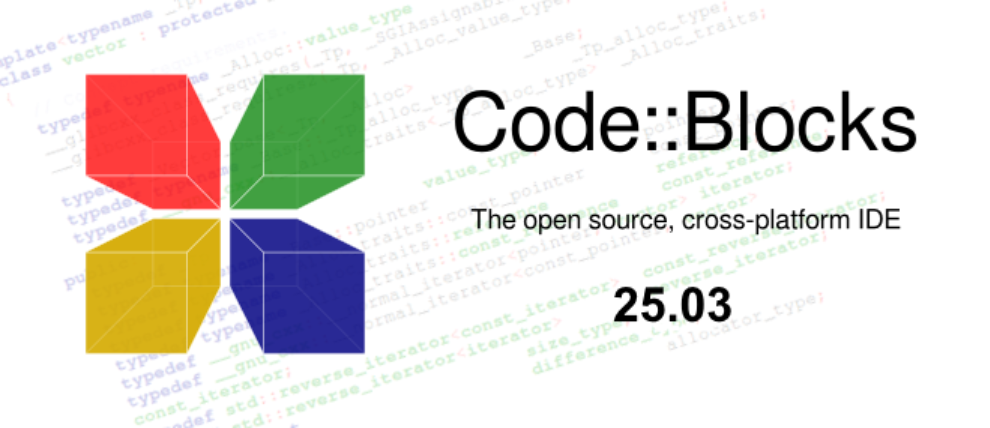</p><p data-lake-id="u7852430b" id="u7852430b"><span data-lake-id="u29e2897c" id="u29e2897c">按照软件提示一路下一步下一步即可安装完成</span></p><p data-lake-id="uea27ff8d" id="uea27ff8d"><span data-lake-id="u9c6a6204" id="u9c6a6204">​</span><br/></p><h3 data-lake-id="dmAC6" data-lake-index-type="2" id="dmAC6"><span data-lake-id="u13bb5b73" id="u13bb5b73">安装杰理工具链</span></h3><p data-lake-id="u94d44d0c" id="u94d44d0c"><span data-lake-id="uf955d797" id="uf955d797">双击运行：</span><strong><span data-lake-id="u579a64c3" id="u579a64c3">jieli-windows-toolchains-2.5.2.exe</span></strong></p><p data-lake-id="uee2d4316" id="uee2d4316">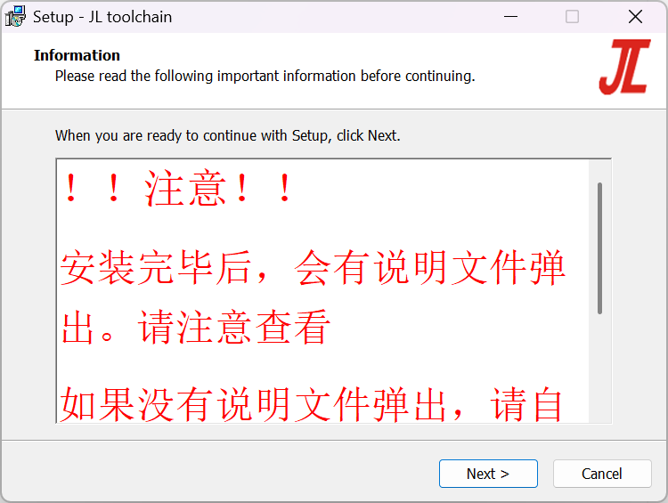</p><p data-lake-id="u78dba097" id="u78dba097"><span data-lake-id="u09320a08" id="u09320a08">看到Next一路单击它即可，最后单击Finish即可安装完成</span></p><p data-lake-id="u609dc202" id="u609dc202"><br/></p><h3 data-lake-id="Q0WpT" data-lake-index-type="2" id="Q0WpT"><span data-lake-id="ua9f16d65" id="ua9f16d65">安装杰理软件包管理器</span></h3><p data-lake-id="u92829895" id="u92829895"><span data-lake-id="u75e031fe" id="u75e031fe">双击运行：</span><strong><span data-lake-id="ub93fb540" id="ub93fb540">pkgman-offline-setup-20220318.exe</span></strong></p><p data-lake-id="uad4b6f07" id="uad4b6f07">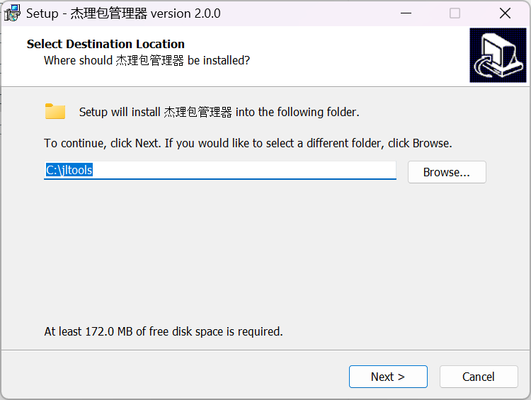</p><p data-lake-id="u77e2305a" id="u77e2305a"><span data-lake-id="u290b1ae4" id="u290b1ae4">看到Next一路单击它即可，最后单击Finish即可安装完成</span></p><p data-lake-id="u27b45f1d" id="u27b45f1d"><span data-lake-id="u828aeca1" id="u828aeca1">​</span><br/></p><h3 data-lake-id="suUuy" data-lake-index-type="2" id="suUuy"><span data-lake-id="ub1674a6c" id="ub1674a6c">打开demo_hello工程</span></h3><h4 data-lake-id="T4Xll" data-lake-index-type="2" id="T4Xll"><span data-lake-id="u90dc609a" id="u90dc609a">启动CodeBlocks </span></h4><p data-lake-id="u73472f70" id="u73472f70">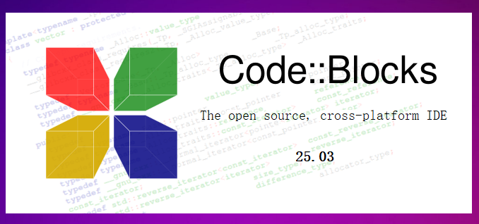</p><p data-lake-id="u3be29fc0" id="u3be29fc0"><span data-lake-id="u49ae9855" id="u49ae9855">软件启动之后，我们会看到如下图所示的软件界面</span></p><p data-lake-id="u3779f636" id="u3779f636">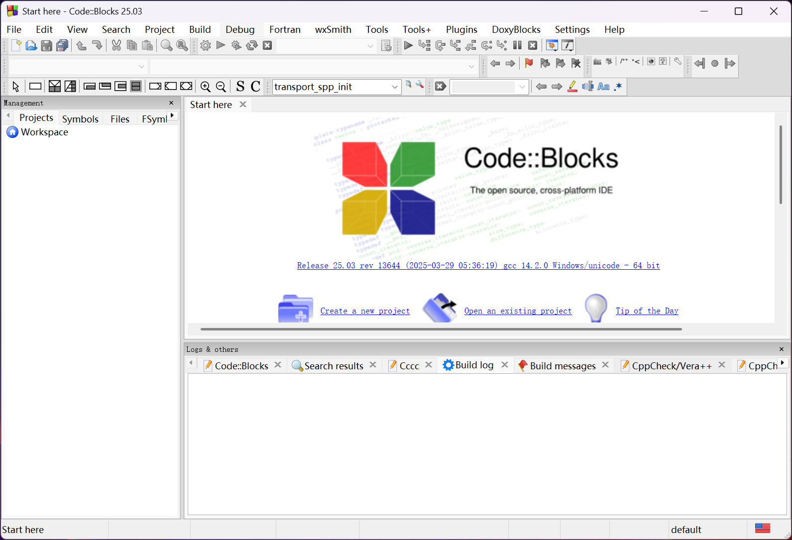</p><h4 data-lake-id="hioIk" data-lake-index-type="2" id="hioIk"><span data-lake-id="u96d9acaa" id="u96d9acaa">打开.cbp文件</span></h4><p data-lake-id="uab18f662" id="uab18f662">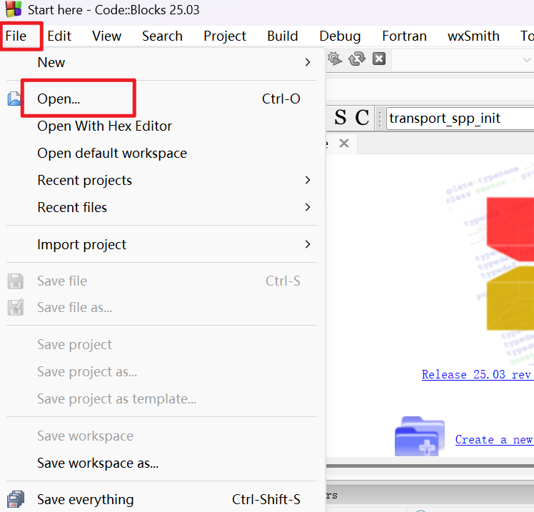</p><p data-lake-id="ud406ce84" id="ud406ce84"><span data-lake-id="uddcf9314" id="uddcf9314">在打开的弹出框里我们选择demo_hello工程下的.cbp文件</span></p><p data-lake-id="ucef558e4" id="ucef558e4">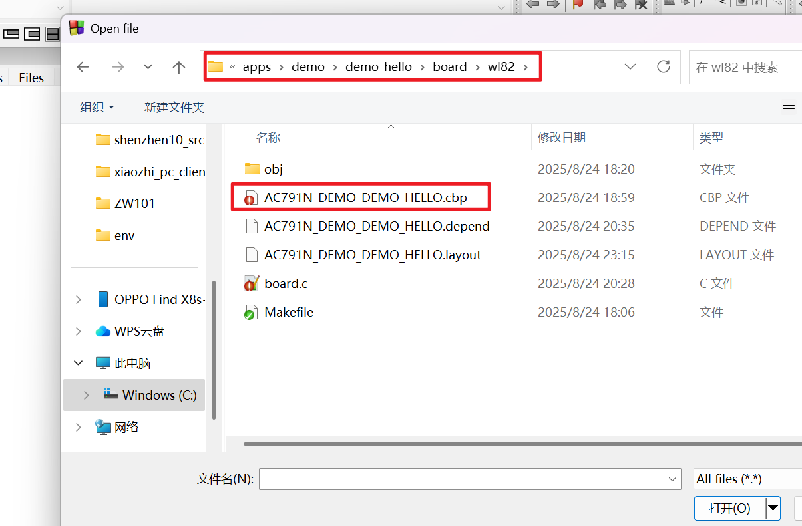</p><p data-lake-id="ud79bb586" id="ud79bb586"><span data-lake-id="ubecbc195" id="ubecbc195">具体文件路径也可以参考这里，在我们下载的SDK目录下</span></p><p data-lake-id="u3736030a" id="u3736030a">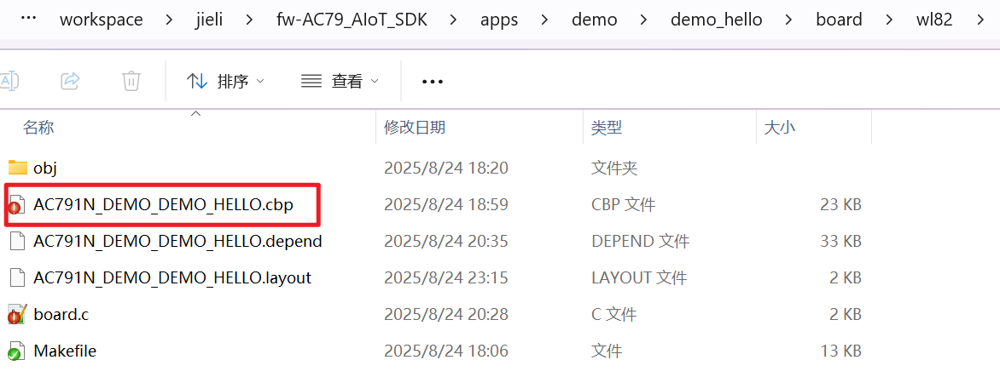</p><h3 data-lake-id="oYBY5" data-lake-index-type="2" id="oYBY5"><span data-lake-id="ud5582561" id="ud5582561">编译工程</span></h3><p data-lake-id="u31484413" id="u31484413"><span data-lake-id="u72fd8b46" id="u72fd8b46">单击如图所示的图标，我们可以即可编译工程</span></p><p data-lake-id="uf4de0c28" id="uf4de0c28"></p><p data-lake-id="ub0b8dd87" id="ub0b8dd87"><span data-lake-id="ua7059eb6" id="ua7059eb6">若看到框框中的内容，即说明编译环境已经没有问题啦！</span></p><p data-lake-id="u6d95ab07" id="u6d95ab07">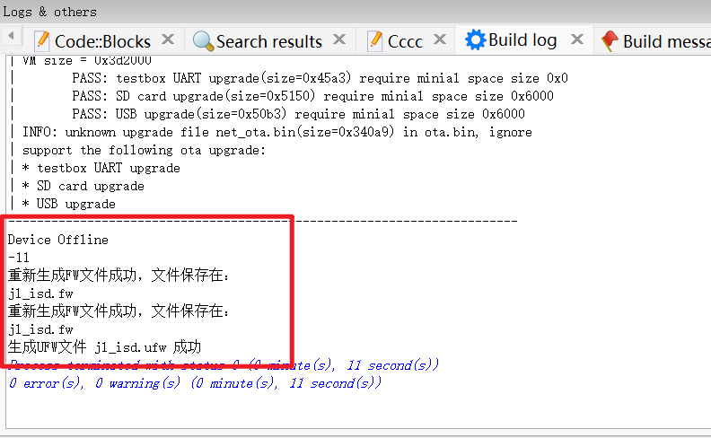</p><p data-lake-id="u290ac5aa" id="u290ac5aa"><br/></p><h2 data-lake-id="DyQ0T" data-lake-index-type="2" id="DyQ0T"><span data-lake-id="u894813e0" id="u894813e0">硬件环境</span></h2><h3 data-lake-id="KgERD" data-lake-index-type="2" id="KgERD"><span data-lake-id="ua6a030a8" id="ua6a030a8">核心板</span></h3><p data-lake-id="u210b405b" id="u210b405b">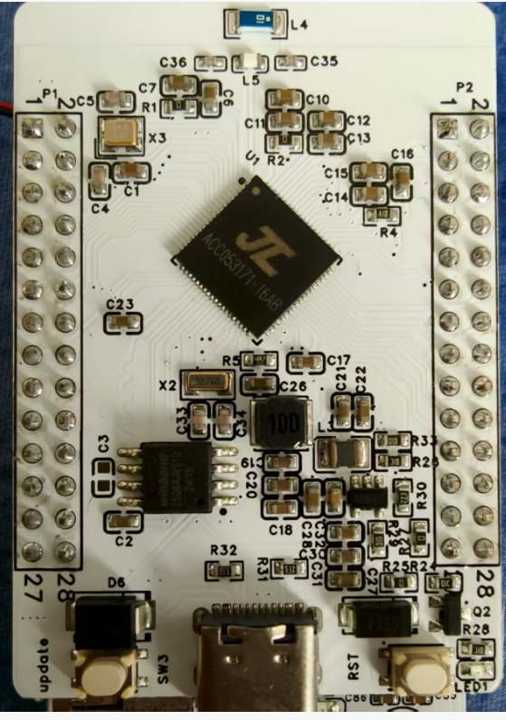</p><h3 data-lake-id="ILtlk" data-lake-index-type="2" id="ILtlk"><span data-lake-id="uf9285e4c" id="uf9285e4c">扩展板</span></h3><p data-lake-id="uf2bcc6b9" id="uf2bcc6b9">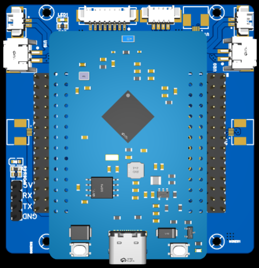</p><h2 data-lake-id="MvcTp" data-lake-index-type="2" id="MvcTp"><span data-lake-id="uadb54d90" id="uadb54d90">进入USB下载模式</span></h2><p data-lake-id="u400f5fcf" id="u400f5fcf"><a data-lake-id="u248c8f4c" href="https://doc.zh-jieli.com/AC79/zh-cn/master/getting_started/preparation/update.html" id="u248c8f4c" rel="noopener noreferrer" target="_blank"><span data-lake-id="u05acc048" id="u05acc048">https://doc.zh-jieli.com/AC79/zh-cn/master/getting_started/preparation/update.html</span></a></p><p data-lake-id="uceb4a460" id="uceb4a460"><span class="lake-fontsize-12" data-lake-id="uacbbddcc" id="uacbbddcc" style="color: rgb(34, 34, 34); background-color: rgb(252, 252, 252)">​</span><br/></p><p data-lake-id="u315334a8" id="u315334a8"><span class="lake-fontsize-12" data-lake-id="u2f90fc6f" id="u2f90fc6f" style="color: rgb(34, 34, 34); background-color: rgb(252, 252, 252)">以 AC79_DevKitBoard 开发板为例，将开发板 USB 的接口端使用合适的 USB 数据线正确连接到 PC 主机。</span></p><ul list="ub9ce2f23"><li data-lake-id="uc6bae101" fid="u8efad50e" id="uc6bae101"><span class="lake-fontsize-12" data-lake-id="u37a23572" id="u37a23572" style="color: rgb(34, 34, 34); background-color: rgb(252, 252, 252)">通过长按开发板的顶板 </span><span class="lake-fontsize-9" data-lake-id="u65a6e467" id="u65a6e467" style="color: rgb(231, 76, 60); background-color: rgb(252, 252, 252)">update</span><span class="lake-fontsize-12" data-lake-id="u814a2e69" id="u814a2e69" style="color: rgb(34, 34, 34); background-color: rgb(252, 252, 252)"> 键，同时（注意是同时, 并hold住）按 </span><span class="lake-fontsize-9" data-lake-id="u2f0af220" id="u2f0af220" style="color: rgb(231, 76, 60); background-color: rgb(252, 252, 252)">reset</span><span class="lake-fontsize-12" data-lake-id="ud14edd5c" id="ud14edd5c" style="color: rgb(34, 34, 34); background-color: rgb(252, 252, 252)"> 键。</span></li><li data-lake-id="u41cf793a" fid="u8efad50e" id="u41cf793a"><span class="lake-fontsize-12" data-lake-id="u3367678e" id="u3367678e" style="color: rgb(34, 34, 34); background-color: rgb(252, 252, 252)">先松开</span><span class="lake-fontsize-12" data-lake-id="uc220a032" id="uc220a032" style="color: rgb(34, 34, 34); background-color: rgb(252, 252, 252)"> </span><span class="lake-fontsize-9" data-lake-id="u05ebddc9" id="u05ebddc9" style="color: rgb(231, 76, 60); background-color: rgb(252, 252, 252)">reset</span><span class="lake-fontsize-12" data-lake-id="u24646b83" id="u24646b83" style="color: rgb(34, 34, 34); background-color: rgb(252, 252, 252)"> </span><span class="lake-fontsize-12" data-lake-id="u384473bc" id="u384473bc" style="color: rgb(34, 34, 34); background-color: rgb(252, 252, 252)">键，再松开</span><span class="lake-fontsize-12" data-lake-id="u6099fc33" id="u6099fc33" style="color: rgb(34, 34, 34); background-color: rgb(252, 252, 252)"> </span><span class="lake-fontsize-9" data-lake-id="ua03be361" id="ua03be361" style="color: rgb(231, 76, 60); background-color: rgb(252, 252, 252)">update</span><span class="lake-fontsize-12" data-lake-id="u068afe71" id="u068afe71" style="color: rgb(34, 34, 34); background-color: rgb(252, 252, 252)"> </span><span class="lake-fontsize-12" data-lake-id="ua875a283" id="ua875a283" style="color: rgb(34, 34, 34); background-color: rgb(252, 252, 252)">键，即可进入下载模式。</span></li></ul><p data-lake-id="ud8ceb117" id="ud8ceb117">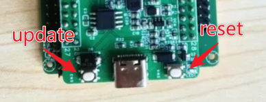</p><p data-lake-id="u1fe84036" id="u1fe84036"><span class="lake-fontsize-12" data-lake-id="u476c3d51" id="u476c3d51" style="color: rgb(34, 34, 34); background-color: rgb(252, 252, 252)">进入下载模式后，电脑弹出如下红框所示的盘符，代表进入下载模式成功。</span></p><ul list="ub9ce2f23" start="3"><li data-lake-id="uf62e5d1d" fid="u8efad50e" id="uf62e5d1d">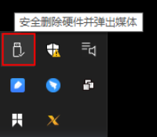</li></ul><p data-lake-id="ubd0df29c" id="ubd0df29c"><span class="lake-fontsize-12" data-lake-id="ubbbe36bf" id="ubbbe36bf" style="color: rgb(34, 34, 34); background-color: rgb(252, 252, 252)">此时，可以依次点击</span><span class="lake-fontsize-12" data-lake-id="uebadddf1" id="uebadddf1" style="color: rgb(34, 34, 34); background-color: rgb(252, 252, 252)"> </span><span class="lake-fontsize-9" data-lake-id="u5c6faa3d" id="u5c6faa3d" style="color: rgb(231, 76, 60); background-color: rgb(252, 252, 252)">打开电脑</span><span class="lake-fontsize-12" data-lake-id="uae880a77" id="uae880a77" style="color: rgb(34, 34, 34); background-color: rgb(252, 252, 252)"> </span><span class="lake-fontsize-12" data-lake-id="u16517c9d" id="u16517c9d" style="color: rgb(34, 34, 34); background-color: rgb(252, 252, 252)">–</span><span class="lake-fontsize-12" data-lake-id="ud909cc90" id="ud909cc90" style="color: rgb(34, 34, 34); background-color: rgb(252, 252, 252)"> </span><span class="lake-fontsize-9" data-lake-id="uf925fb92" id="uf925fb92" style="color: rgb(231, 76, 60); background-color: rgb(252, 252, 252)">计算机管理</span><span class="lake-fontsize-12" data-lake-id="ub7270c86" id="ub7270c86" style="color: rgb(34, 34, 34); background-color: rgb(252, 252, 252)"> </span><span class="lake-fontsize-12" data-lake-id="ufaf3d023" id="ufaf3d023" style="color: rgb(34, 34, 34); background-color: rgb(252, 252, 252)">–</span><span class="lake-fontsize-12" data-lake-id="uf8f8a006" id="uf8f8a006" style="color: rgb(34, 34, 34); background-color: rgb(252, 252, 252)"> </span><span class="lake-fontsize-9" data-lake-id="u3e13e606" id="u3e13e606" style="color: rgb(231, 76, 60); background-color: rgb(252, 252, 252)">设备管理器</span><span class="lake-fontsize-12" data-lake-id="u93ba5a47" id="u93ba5a47" style="color: rgb(34, 34, 34); background-color: rgb(252, 252, 252)"> </span><span class="lake-fontsize-12" data-lake-id="u0494b107" id="u0494b107" style="color: rgb(34, 34, 34); background-color: rgb(252, 252, 252)">–</span><span class="lake-fontsize-12" data-lake-id="ub3180c8e" id="ub3180c8e" style="color: rgb(34, 34, 34); background-color: rgb(252, 252, 252)"> </span><span class="lake-fontsize-9" data-lake-id="u33845dff" id="u33845dff" style="color: rgb(231, 76, 60); background-color: rgb(252, 252, 252)">磁盘驱动器</span><span class="lake-fontsize-12" data-lake-id="u67ccc3d3" id="u67ccc3d3" style="color: rgb(34, 34, 34); background-color: rgb(252, 252, 252)">，可以看到如下设备</span><span class="lake-fontsize-12" data-lake-id="u30fc2fd8" id="u30fc2fd8" style="color: rgb(34, 34, 34); background-color: rgb(252, 252, 252)"> </span><span class="lake-fontsize-9" data-lake-id="ua6f80fd1" id="ua6f80fd1" style="color: rgb(231, 76, 60); background-color: rgb(252, 252, 252)">WL82</span><span class="lake-fontsize-9" data-lake-id="ue31e86c9" id="ue31e86c9" style="color: rgb(231, 76, 60); background-color: rgb(252, 252, 252)"> </span><span class="lake-fontsize-9" data-lake-id="u8a807f28" id="u8a807f28" style="color: rgb(231, 76, 60); background-color: rgb(252, 252, 252)">UBOOT1.00</span><span class="lake-fontsize-9" data-lake-id="udd9e390d" id="udd9e390d" style="color: rgb(231, 76, 60); background-color: rgb(252, 252, 252)"> </span><span class="lake-fontsize-9" data-lake-id="u4c82dc6f" id="u4c82dc6f" style="color: rgb(231, 76, 60); background-color: rgb(252, 252, 252)">USB</span><span class="lake-fontsize-9" data-lake-id="uc280c994" id="uc280c994" style="color: rgb(231, 76, 60); background-color: rgb(252, 252, 252)"> </span><span class="lake-fontsize-9" data-lake-id="u0e32351a" id="u0e32351a" style="color: rgb(231, 76, 60); background-color: rgb(252, 252, 252)">Device</span><span class="lake-fontsize-12" data-lake-id="u1b7ec94e" id="u1b7ec94e" style="color: rgb(34, 34, 34); background-color: rgb(252, 252, 252)">，即为成功进入了下载模式。</span></p><p data-lake-id="u6e6183c7" id="u6e6183c7">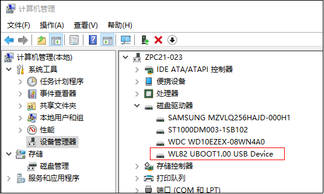</p><p data-lake-id="u9b7077ef" id="u9b7077ef"><span data-lake-id="ua67e609f" id="ua67e609f">确认上述步骤之后，再次单击如下按钮，即可静静等待程序从电脑到杰理芯片中啦</span></p><p data-lake-id="ubd030ec6" id="ubd030ec6">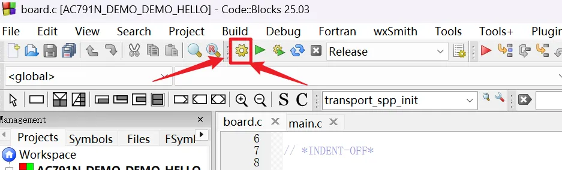</p><p data-lake-id="u6c7c86a6" id="u6c7c86a6"><span data-lake-id="ua721943c" id="ua721943c">整个烧录的过程大概需要个两分钟。</span></p>